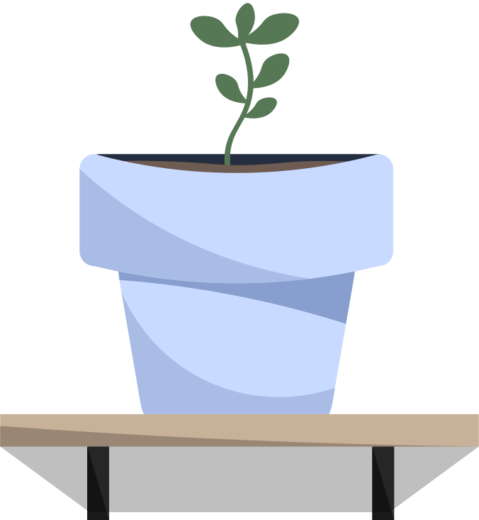

Grundlæggende Indhold
Hvad jeg har lært under temaet
I tema 05 har jeg lært at arbejde med indholdsproduktion fra start til slut. Jeg har i en gruppe arbejdet med at planlægge, producere og efterbehandle indhold som f.eks. tekst og billeder.
Jeg har også lært hvor vigtigt indhold er for brugeroplevelsen og den målgruppe en virksomhed ønsker at nå ud til. Derudover har jeg fået mere erfaring med at arbejde i grupper.
Jeg har desuden lært mere om forskellige tests som kan bruges i researchfasen, herunder den heuristiske test. Samtidig har jeg lært hvordan man bruger GitHub i en gruppe, og hvordan man gemmer og deler sit arbejde korrekt.
Min/Vores arbejdsproces
I dette tema startede vi processen med at oprette et fælles Figma-dokument og et Trello-board, som hjalp os med at planlægge vores tid og skabe overblik over opgaverne. Vi samarbejdede om research, design, wireframes og prototyper gennem hele projektet.
Research spillede en stor rolle i projektet, da vi skulle lave et redesign med fokus på en specifik målgruppe, som udgør kundebasen for den valgte virksomhed. Målet var, at sitet primært skulle være tiltalende for målgruppen, men samtidig give en bedre brugeroplevelse end det oprindelige site. Vi udførte både 5-sekunders tests og Likert-tests på det eksisterende site og på vores redesign, hvilket gav os indsigt i hvilke elementer der fungerede godt, og hvilke der havde behov for forbedring.
Da vi valgte RF Experience, som er en virksomhed i en branche vi ikke havde erfaring med på forhånd, var et interview med en medarbejder vigtigt for at få en bedre forståelse af virksomhedens ønsker til hjemmesiden og for at kunne arbejde mere målrettet med deres målgruppe.
Vi fik udleveret HTML- og CSS-filer til kodning af sitet, hvor jeg havde ansvaret for at udvikle en side, der tydeliggjorde at virksomheden kan tilbyde en samlet og mere omfattende løsning inden for deres serviceydelser.
Projektet blev afsluttet med en Pecha Kucha-præsentation, som både var sjov og udfordrende, da formatet kræver at man planlægger sin præsentation og formidler sine pointer præcist inden for den fastsatte tid.
Se hele vores proces her: RFX Figma Fil

Det endelige resultat
Vi havde lidt bøvl med GitHub i processen, men endte alligevel med et godt resultat vi kunne være stolte af.
Find min løsning her: RFX Redesign
Arbejdet i gruppen resulterede i uenigheder her og der, og jeg ville have foretrukket at kommunikationen havde været bedre igennem hele forløbet. Gruppearbejde er en læringsproces, helt som alt andet.